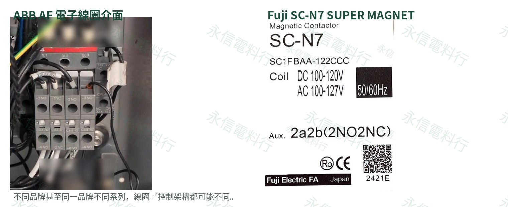

維修現場最容易先問「這顆線圈是不是 220V？」。但只對到電壓，仍可能漏掉 AC／DC、頻率、寬電壓電子線圈、內建整流／控制電路、突波抑制，以及同品牌不同世代的差異。接觸器能不能替換，必須從完整型號一路核對到控制方式。

同樣寫 220V，背後可能是完全不同的控制方式
接觸器的 A1／A2 端並不只有一種線圈形式。常見情況至少包括固定額定 AC 電磁線圈、固定額定 DC 電磁線圈，以及帶電子控制介面的寬電壓／AC-DC 兼用設計。若設備的控制輸出、回授邏輯或 OEM 驗證是依某一種架構設計，只把「220V」對上，仍不能保證動作與系統相容性。
ABB AF38-30-11-13
ABB 官方資料明確說明 AF 系列採 electronic coil interface。AF38-30-11-13 的控制範圍為 100–250V 50/60Hz 或 DC，並內建突波保護。這和傳統單一額定 AC 線圈的使用方式並不相同。
Fuji SC-N7
Fuji Electric 官方將 SC-N6 以上列為 IC-controlled SUPER MAGNET，採「AC input, DC operated」概念，可接受 AC 或 DC 輸入。本批 SC-N7 實物也可見 AC／DC 雙範圍控制標示。
富士電機自己同一個 SC 家族，線圈就不是全部一樣
Fuji 官方資料特別指出：標準 SC-N1～SC-N5A 不採 SUPER MAGNET；SC-N6 以上才採 IC 控制 SUPER MAGNET。所以 SC-N5A AC220V 與 SC-N7 AC200–250V/DC200–240V，雖然控制電壓看起來都落在「200 多伏」範圍，線圈／控制架構卻不同。
這也是為什麼網站新增富士接觸器時，我們把「線圈驅動架構」列成固定核對欄位，而不是只放一個 AC110V／AC220V 標籤。
更容易踩雷的是：SC-1N 與 SC-N1 根本不是同一型號
Fuji Electric 官方接觸器世代資料把 SC-1N 與 SC-N1 分別列在不同世代；SW 系列也有相同情況：SW-1N ≠ SW-N1。字母只是換了一個位置，實際上就已是另一個完整型號。
因此舊機維修時，不能在抄型號時「順手改成比較熟悉的寫法」，也不能把舊 SC-1N 的線圈資料直接套到後來 SC-N1。完整型號的字母、數字、連字號與排列順序，都必須照原件保留。
Siemens 也不能只看「3RT2026」
同一個 Siemens 3RT2026 框架，也會因尾碼對應不同控制電壓。KONE 官方零件頁可確認 3RT2026-1BP40 為 230VDC；Siemens 官方另有 3RT2026-1AL20 230VAC 50/60Hz 版本。只寫「3RT2026 230V」就可能把 AC 與 DC 混在一起。
因此我們不會把「品牌＋框架＋電壓數字接近」當作線圈相同，更不會因此宣稱可以直接互換。
跨品牌或新舊替換，建議至少核對 8 項
完整型號
每一個字母、數字、連字號與排列順序。
AC／DC
控制電源型式不能只看電壓數字。
頻率／範圍
50Hz、60Hz、寬電壓或 AC/DC 兼用。
線圈架構
固定額定電磁線圈或電子控制式線圈。
主接點
AC-3／AC-1 等使用類別與實際負載。
輔助接點
NO／NC 數量、端子位置與回授用途。
附件／安裝
熱繼電器、輔助塊、端子與尺寸。
OEM 系統
電梯、起重與專用設備還要查原廠料號與驗證配置。
結論：線圈電壓只是第一關，不是替代結論
ABB AF、Siemens SIRIUS 與 Fuji SC 的例子都說明：控制電壓只是選型的一個欄位。真正的替代判斷還必須包含線圈驅動架構、完整尾碼、接點拓撲、附件與設備控制邏輯。尤其舊機維修，越是「看起來很像」的型號，越要逐碼確認。
永信的做法
之後網站新增任何電磁接觸器、磁力起動器或控制繼電器，都會先以實物銘牌＋完整型號查原廠資料，再標示線圈／控制架構。查不到的欄位就保留待確認，不用相近型號補猜。
原廠核對資料
- Fuji Electric｜SC／SW Series：SC-N6 以上 SUPER MAGNET；標準 SC-N1～SC-N5A 不採 SUPER MAGNET。
- Fuji Electric｜接觸器世代更新資料：分列 SC-1N／SC-N1 與 SW-1N／SW-N1。
- Fuji Electric｜SC-NEXT 新舊比較：尺寸、端子、輔助接點與性能需逐項看相容性。
- ABB｜AF38-30-11-13：電子線圈介面、100–250V AC/DC 控制範圍與內建突波保護。
- KONE Parts｜KM51082803：Siemens 3RT2026-1BP40、230VDC。
- Siemens｜3RT2026-1AL20：230VAC 50/60Hz 版本，說明同框架尾碼差異的重要性。